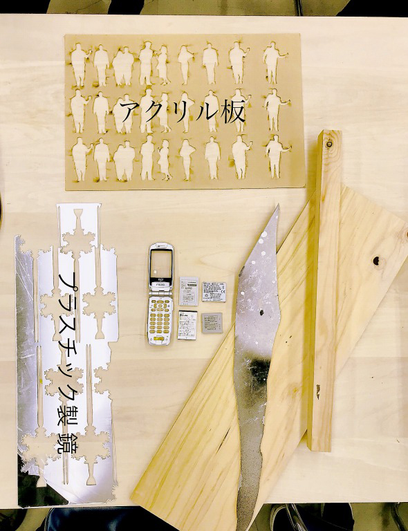
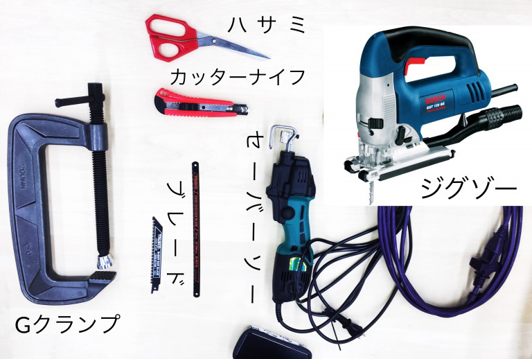

2018.5.11
私のグループは”切断”をしました。
様々な素材を、様々な機材で、様々な切り方で切っていきました。
ー材料ー
アクリル板、木材（板、角柱）、鉄板、ダンボール、発泡スチロール

ー機材ー
カッターナイフ、ハサミ、ハンドソー、セイバーソー、ジグソー、G型クランプ
ー切り方ー
直線、曲線、ジグザグ、線の上をきる
ーワークショップの内容ー
各自自分のイニシャルを下書きどうりに切ってもらいます。
曲線や真ん中に空間のある文字はどうしたらうまく切れるのかデザイン案から考えてもらいます。
ー感想ー
初めて触る工具が色々さわれて面白っかったです。
1番印象に残ったのは、分厚い鉄板を綺麗に切れたことと、
意外とアクリル板がどの工具を使っても綺麗に切れなかったことです。
ーチームに貢献したことー
私はfabblrで書いてもらった文に合う写真を貼っていきました。
何回写真を貼ってもエラーになってしまうので困ったけれど、画素数が問題だと気づきPhotoshopで編集して貼るとうまくいきました。
始めは画素数を変えて貼るのに苦労しましたが、教えてもらいながら出来るようになりました。
ワークショップでは、２人体験したのでそのうちの１人を教えていました。
書かれていなくて知っている情報があったので、ちょこっと手を加えました。
ー反省点・改善点ー
・マスクは絶対必要だと思いました。・ワークショプで、せっかく２人体験していたのに、１人は人から見えにくい所に配置してしまったので、
配置をそのままにして見ている人にテーブルを囲むように円になってもらって近いところの作業を見てもらう形にしたらよかったな
と思いました。